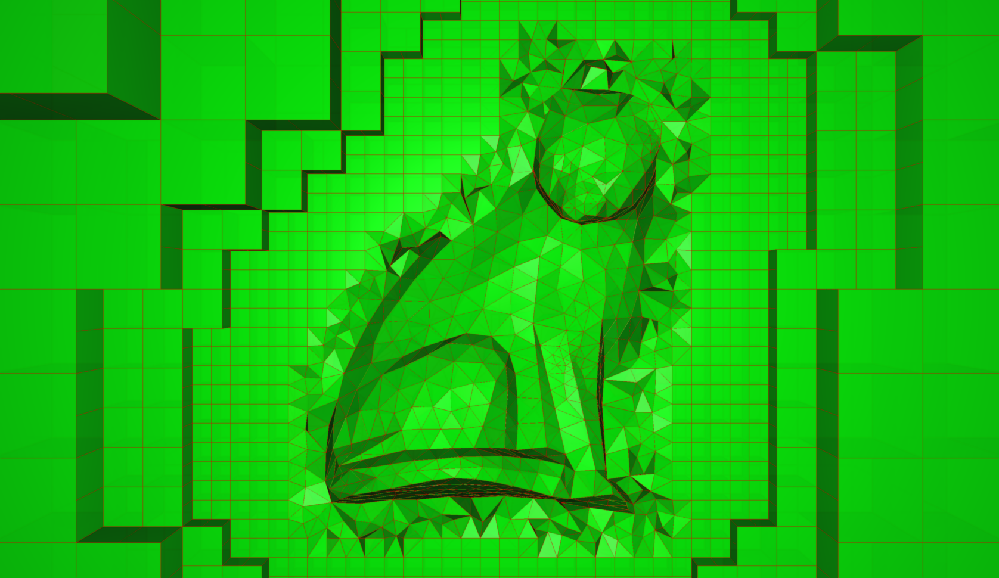
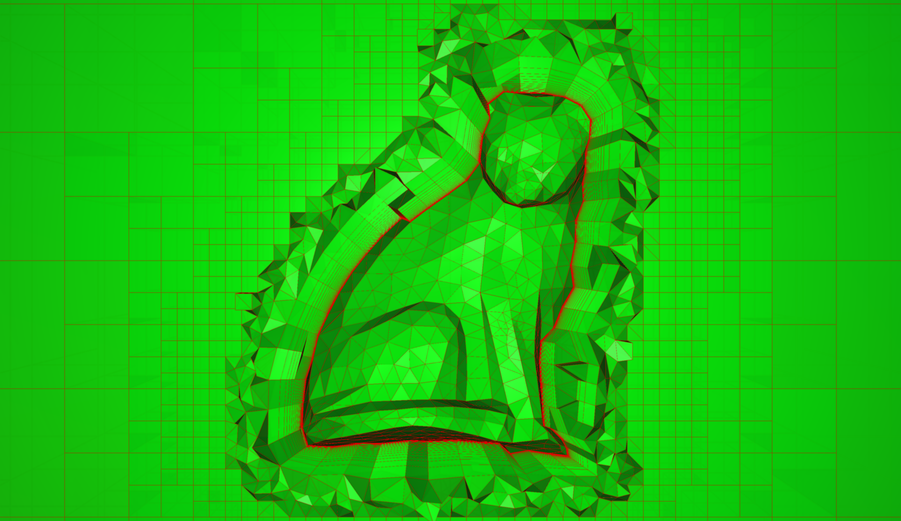

This tutorial demonstrates how to generate an unstructured octree mesh
and adapt it according to a sensor defined on the octree.
|
 Unstructured octree mesh without boundary layer around a cat body. |
 Unstructured octree mesh with a boundary layer around a cat body. |
The input of the script must be a triangulated surface mesh, closed and watertight, and already
correctly meshed for CFD.
If the parameter hWall is positive, a prismatic boundary layer is generated from the input surface using G.addNormalLayers. By default, the boundary layer consists in two extrusions with different geometric series.
An unstructured octree is generated around the surface (the body surface or the external face of the boundary layer)
using G.octree. By default, the snear parameter is automatically calculated with respect to the averaged size of the surface elements. By default, the dfar parameter is equal to 10 times the maximum size of the body. If needed, these parameters can be modified in the script.
If the input case contains a 'Refine' base, then the surfaces defined in this base are used to
refine locally the octree using G.adaptOctree.
An offset surface, located to a certain distance of the input surface (the body surface or the external face of the boundary layer) is then computed.
This surface digs a hole in the octree using X.blankCells.
Then the space is filled with tetras using G.tetraMesher.
[Download case file].
[Download python script].